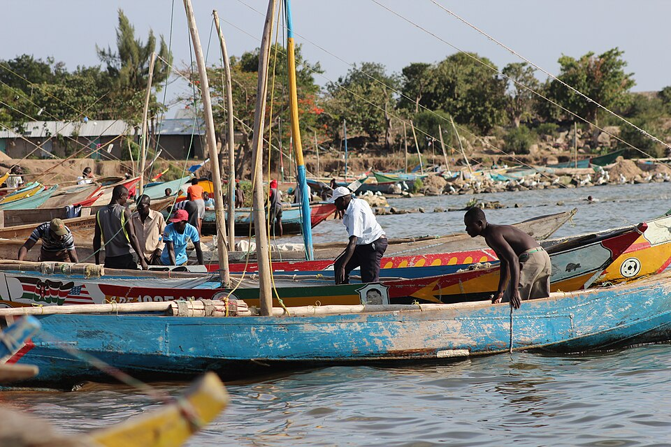
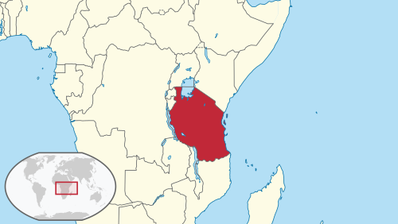
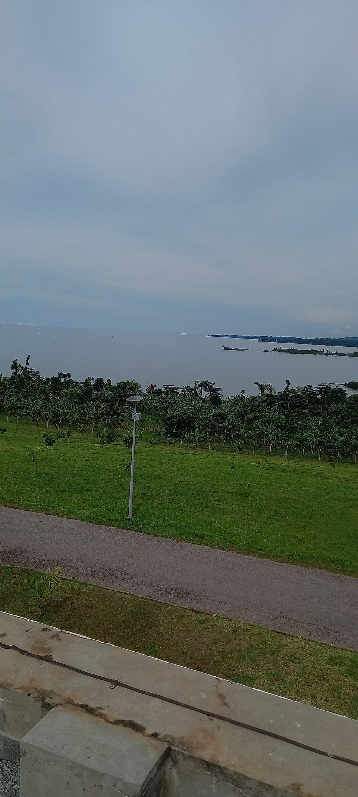
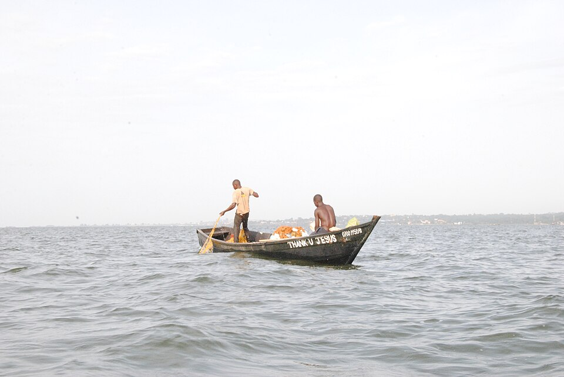

On January 30, 1962, three schoolgirls in a small village boarding school near Lake Victoria began to laugh. They couldn't stop.
It wasn't a joke. There was no punchline. The girls — aged 12 to 18, living in a strict mission-run school in Kashasha, on the western coast of Lake Victoria — were overcome by something they couldn't control and didn't understand. The laughter came in waves, lasted for hours, sometimes blurred into crying, and left them unable to concentrate on their lessons.
Within weeks, it spread to 95 of the school's 159 girls.
By the time it was over, 14 schools had been shut down, roughly 1,000 people had been affected, and the outbreak had rippled across 100 miles of Tanzania over 18 months. Not a single pathogen was ever found. No toxin was ever detected. This was the Tanganyika Laughter Epidemic — one of history's most misunderstood events, and a haunting case study in what happens when human pressure finds nowhere to go.
What Actually Happened
A nation newborn. Girls caught between worlds. And then — the laughter began.
The outbreak began at a mission-run boarding school for girls in the village of Kashasha, in the Bukoba District of Tanganyika — a country that had just achieved independence from British colonial rule little more than a month earlier. The students were adolescents under rigid discipline, living away from home, navigating immense expectations from teachers and parents, and situated at the fault line between traditional tribal authority and the new ideas entering the world through colonial education.
Three girls started laughing. Then more joined. The episodes lasted anywhere from a few hours to 16 days, averaging about a week. The teaching staff remained completely unaffected — the phenomenon ran through students only. But it made teaching impossible.
On March 18, 1962, the school closed.
The students were sent home to their villages. And the laughter went with them.

Lake Victoria — the vast inland sea across whose western shore the outbreak would spread. (NASA / Wikimedia Commons)
The Spread
The decision to shut the school would prove catastrophic — not because the disease was real, but because it wasn't.
When the Kashasha school shut its doors, officials no doubt believed they were containing the problem. In a cruel irony, closing the school was what unleashed it.
The affected girls returned to their home villages and carried the pattern of symptoms with them. In April and May 1962, 217 people — mostly school-age children and young adults — experienced laughing attacks in the village of Nshamba, over the course of 34 days. Nshamba is about 55 miles west of Bukoba.
In June, the epidemic reached Ramashenye Girls' Middle School, where 48 more students were affected. The Kanyangereka village saw cases as well. The outbreak spread through social networks rather than geographic proximity — affecting communities that were connected through family ties, school attendance, and shared cultural structures, not necessarily places that sat next to each other on a map.
The pattern was consistent: an outbreak would begin, run its course over several weeks, subside, and then flare up somewhere else with the same social conditions in place. By the time the phenomenon finally died out — roughly 18 months after it began — 14 schools had been closed and approximately 1,000 people had been affected.

Tanzania (then Tanganyika) — the outbreak spanned roughly 100 miles of the Lake Victoria western shore region.
| Schools closed | 14 |
| People affected | ~1,000 |
| Duration | ~18 months (1962–1964) |
| Geographic spread | ~100 miles |
| Initial cases | 3 girls → 95 of 159 (Kashasha) |
| Nshamba village | 217 people over 34 days |
| Biological cause found | None |
What It Actually Looked Like
The name is misleading — almost comically so, given what it described.
What the affected people experienced was not a carefree giggle or a joyful response to humor. It was a distressing, intrusive, and often scary set of symptoms that included:
- Uncontrollable laughter — involuntary, repetitive, and not tied to any emotional state of amusement
- Crying — episodes frequently blended between laughter and tears
- Restlessness and agitation — students reported feeling unable to sit still or calm themselves
- Pain — various physical pains were reported, though no clear source was identified
- Fainting and respiratory problems — some students experienced more severe symptoms
- Rashes and general malaise — physical symptoms without identifiable medical cause
- Severe anxiety and inability to concentrate — which made attending school impossible
A crucial point, often lost in retelling: these people were not pretending, exaggerating, or pranking anyone. The symptoms were real, disruptive, and deeply distressing to the people experiencing them. The laughter functioned less like comedy and more like a malfunctioning reflex — a physical symptom of psychological distress that expressed itself in an unusual form.
Medical examinations were conducted. Doctors tested for infections, toxins, and neurological causes. Every test came back clean.

The Lake Victoria shoreline — the landscape that surrounded the villages where the outbreak took root.
The Root Cause: Mass Psychogenic Illness
Understanding the clinical label isn't the same as understanding why.
The medical term for what happened is Mass Psychogenic Illness (MPI) — sometimes called mass hysteria or conversion disorder. It describes a phenomenon where psychological distress expresses itself through physical symptoms that spread through a group via social contagion, with no underlying biological cause. MPI is well-documented and occurs across cultures and centuries.
But the critical questions remain: Why here? Why these people? Why laughter?
The answer lies in the intersection of several powerful factors:

Life on Lake Victoria — the communities that would be reshaped by an invisible wave of distress.
A Society in Upheaval. Tanganyika had just gained its independence in December 1961. The nation was literally being reborn — politically, socially, culturally — while the institutions that governed daily life (schools, churches, traditional authorities) were still operating under assumptions designed for a colonial order. For young people, especially girls caught between traditional conservatism at home and new aspirations at school, the dissonance must have been immense.
A Pressure-Cooker Environment. Mission-run boarding schools in 1960s Tanzania were strict, hierarchical, and intensely disciplined. Students lived away from their families, subject to rigorous schedules and moral expectations. For adolescent girls — who are developmentally at peak susceptibility to social influence — this was a high-stress, low-autonomy environment.
The Mechanics of MPI. Mass Psychogenic Illness almost always occurs in populations with limited power to address the sources of their distress in ordinary ways. It's a kind of psychological last resort — the body and mind finding a way to express what can't be expressed directly. Adolescents are particularly vulnerable because they lack fully developed coping mechanisms for stress and are highly attuned to social cues from peers.
"MPI is a last resort for people of a low status. It's an easy way for them to express that something is wrong."
Sociologists Bartholomew and Wessely's Culture-Specific Hypothesis. Robert Bartholomew and Simon Wessely argued that the outbreak was a "conversion reaction" — a manifestation of the cultural dissonance between the strict traditional conservatism enforced at home and the new, liberating ideas encountered at school. They noted that MPI episodes in 1960s Africa were particularly prevalent in missionary schools, suggesting the collision of worldviews was the key trigger.
"We must not, however, think for one moment that this is peculiar to Africans. There is much historical evidence to prove that emotional upheavals associated with hysteria occur whenever a people's cultural roots and beliefs become suddenly shattered."
Not Just the Laughter
Three outbreaks. One underlying story.
The Tanganyika outbreak was part of a cluster of three related mass behavioral epidemics across East Africa in the early 1960s:
Bukoba · Jan 1962
Laughter mania. Laughter, crying, restlessness, pain, fainting, respiratory problems, rashes, and anxiety — the outbreak that started it all.
Kigezi, Uganda · Jul 1963
Running mania. Running, chest pain, agitation, talkativeness, violence, anorexia, exhaustion, and depression. Affected predominantly adolescent girls.
Mbale, Uganda · Nov 1963
Running mania. The same symptom profile as Kigezi. Like the laughter epidemic, a dramatic expression of the same cultural dissonance.
All three occurred within a narrow geographic area and time window. All three affected predominantly adolescent girls. All three were attributed to the same underlying cause: the cultural dissonance of communities caught between traditional ways and modernizing influences.
The running manias were particularly dramatic — afflicted individuals ran for extended distances, experiencing acute physical exhaustion. Unlike the laughter epidemic, the running episodes were immediately visibly disruptive and drew swift intervention.
Historical Parallels
The Tanganyika Laughter Epidemic is part of a long lineage — one that stretches back centuries.
A woman began dancing in the street and couldn't stop. Within a month, roughly 400 people were dancing uncontrollably, some of them dancing themselves to death. Like Tanganyika, it was a stress-induced epidemic affecting a population under severe hardship — famine, disease, and extreme poverty.
Periodic outbreaks of dancing and convulsive behavior across medieval Europe, particularly in Germany and France. Hundreds would dance for hours or days at a time, often in a state of apparent trance.
Some historians have reinterpreted the bizarre physical symptoms experienced by the accusers (convulsions, contortions, screaming fits) as a form of MPI triggered by the extreme social tensions of Puritan Salem.
A series of reports in Illinois of a mysterious gasser who allegedly sprayed toxic substances through bedroom windows at night, causing nausea, breathing difficulty, and paralysis. No gas was ever found. Investigators concluded it was a collective delusion.
Two Canadian students died laughing at a movie, though medical investigation found no natural cause for death, and some researchers have linked the events to stress-induced physiological responses.
What We Understand Now
Since 1962, our understanding of MPI has advanced considerably.
- Closed-group environments Boarding schools, convents, workplaces, and factories are common sites because they create dense social networks with shared stressors.
- Powerlessness MPI disproportionately affects people who lack control over the conditions causing their distress. It's often described as "the last resort of the powerless."
- Social contagion via observation Seeing someone else experience symptoms primes observers to experience similar symptoms. Mirror neurons, empathy, and anxiety form a feedback loop.
- Cultural scripts The form MPI takes is shaped by cultural context and expectations. In medieval Europe under religious stress, it was dancing and convulsions. In 1960s Tanzania under cultural collision, it was laughter.
- The role of authority responses How institutions react to MPI can either amplify or contain it. Closing the Kashasha school and sending students home likely accelerated the outbreak rather than stopping it.
What the Epidemic Teaches Us
Not a curiosity. A lesson.
The Tanganyika Laughter Epidemic is not a curiosity. It's a lesson about the relationship between social environment and human physiology — how the body and mind respond when the social world shifts too fast for people to adapt.
Three girls started laughing. A thousand more followed. Fourteen schools closed. For 18 months, an entire region of East Africa dealt with something that no doctor could cure, no authority could command away, and no explanation could fully contain.
The epidemic ended because epidemics of this kind always end: the underlying social pressure shifted, the conditions that made the symptoms possible dissolved, and the people it affected gradually returned to their normal lives. But the underlying truth the epidemic exposed — that unaddressed stress and cultural dissonance can literally remake the body — remains as relevant today as it was in 1962.
Laughter, it turned out, was the most honest thing those girls had.
It was just the wrong kind of laughter for anyone to recognize.
Further Reading
- Hempelmann, Christian F. (2007) — "The Epic Tanganyika Laughter Epidemic Revisited" — Humor: International Journal of Humor Research, 20(1), 49–71. The definitive academic analysis.
- Rankin, A.M. & Philip, A.P.A. (1963) — "An epidemic of laughing in the Bukoba district of Tanganyika" — Central African Journal of Medicine, 69, 167–170. The original medical report.
- Bartholomew, Robert & Evans, Hilary (2014) — Outbreak! The Encyclopedia of Extraordinary Social Behavior — McFarland. Comprehensive academic reference for MPI cases worldwide.
- Kagwa, Benjamin H. (1964) — "The Problem of Mass Hysteria in East Africa" — East African Medical Journal, 41, 560–565.
- Radiolab (2008) — "Laughter" — WNYC Studios podcast episode discussing the outbreak.
- Bartholomew, Robert E. (2001) — Little Green Men, Meowing Nuns and Head-Hunting Panics — McFarland.
- Lake Victoria from space — NASA, via Wikimedia Commons
- Map of Tanzania — Wikimedia Commons
- Lake Victoria shoreline — Wikimedia Commons
- Fishing on Lake Victoria — Wikimedia Commons